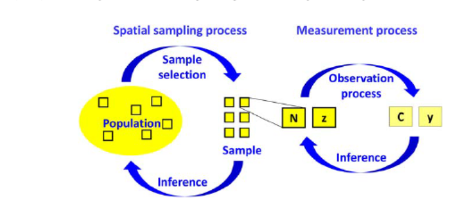

Clase 1: Distribución, abundancia, riqueza de especies y modelos jerárquicos en ecología
En esta primera clase, discutiremos los patrones puntuales, los estimadores de abundancia y ocupación en los diseños para estudiar metapoblaciones, sus parámetros y errores en los modelos aplicados a la ecología. Finalmente, profundizaremos en los modelos jerárquicos para estimar la distribución, abundancia y riqueza de especies.
PROCESOS PUNTUALES, DISTRIBUCIÓN, ABUNDANCIA Y RIQUEZA DE ESPECIES
La distribución y la abundancia son las dos variables de estado fundamentales en ecología (Begon et al., 1986; Krebs, 2009), y la riqueza de especies es la medida más utilizada para evaluar la biodiversidad (Purvis y Hector, 2000; Balmford et al., 2003). Las tres son el foco de una gran cantidad de estudios ecológicos teóricos y, especialmente, de estudios centrados en problemas de manejo o conservación específicos que involucran especies raras o en peligro, animales de caza y especies invasoras. Sin embargo, las tres son solo cantidades derivadas, es decir, resúmenes de una cantidad más fundamental: los patrones de puntos. Los patrones de puntos son el resultado de procesos estocásticos conocidos como procesos puntuales y, como es de esperar, los modelos estadísticos que los describen se llaman modelos de procesos puntuales (PPM; Illian et al., 2008; Wiegand y Moloney, 2014). Los PPM tratan tanto el número como las ubicaciones de puntos discretos como cantidades aleatorias regidas por un campo de intensidad subyacente y continuo. La intensidad es el número esperado de puntos (por ejemplo, animales o plantas) por unidad de área en algún área de estudio y es el parámetro modelado.
Tanto la distribución como la abundancia son resúmenes espaciales simples de patrones de puntos para una especie animal o vegetal, es decir, agregaciones de un patrón de puntos en alguna área. Para desarrollar una comprensión básica de las relaciones entre un patrón de puntos, la abundancia y la ocurrencia, realizaremos una primera simulación de datos sencilla en el programa R.
La función sim.fn permite experimentar con la relación entre un patrón de puntos, la abundancia y la ocurrencia en función de la intensidad del patrón (que es algo que no se puede controlar en la vida real y es el resultado de la biología) y del tamaño de la cuadrícula, o más específicamente, el tamaño de las celdas que componen esa cuadrícula; esto es algo que puedes ajustar.
La función simula ubicaciones de animales o plantas en una cuadrícula de celdas que forma un cuadrante con un tamaño total (unidades totales) igual a quad.size, según un proceso de Poisson en el que los individuos se distribuyen al azar en el espacio. Este proceso se caracteriza por una intensidad, o número esperado de plantas o animales (“puntos”) por unidad de área. El patrón de puntos resultante se discretiza superponiendo una cuadrícula con celdas cuadradas de longitud cell.size. Esta discretización del espacio es lo que permite definir la abundancia en primer lugar y, luego, la presencia/ausencia o ocurrencia. La riqueza de especies, la tercera cantidad crucial mencionada en el título, es la suma de especies que ocurren en un sitio, lo que representa un resumen de los patrones de puntos, no para una sola especie, sino para un conjunto de especies presentes en un sitio.
En esta simulación, un “sitio” está representado por una celda en toda la cuadrícula. Tal vez puedas imaginar la cuadrícula completa como una región en la que se lleva a cabo tu estudio. Solo una vez que hemos establecido esa discretización del espacio, podemos definir la abundancia (que nos gusta denotar como N) o la ocurrencia (presencia/ausencia) la cual nos gusta denotar como z). Luego, la abundancia N es simplemente el número de puntos que caen en cada “sitio” (es decir, celda): si no hay puntos en una celda, la abundancia es cero; si hay un punto, la abundancia es uno; y así sucesivamente. Además, la presencia/ausencia (z) distingue los dos casos en los que no hay puntos en una celda (es decir, N = 0, lo cual representa una ausencia o no ocurrencia) o en los que hay uno o más puntos en la celda (es decir, N > 0, lo cual representa una presencia u ocurrencia). Así, podemos decir que la abundancia es un primer paso en la agregación de un patrón de puntos subyacente dentro de un esquema de discretización espacial, y la ocurrencia es un segundo paso en esta agregación sobre las unidades espaciales.
Alternativamente, podemos decir que la ocurrencia es un resumen simplificado y con poca información de la abundancia, donde solo se registran dos clases de abundancia: una siendo cero (=“ausencia”) y la La otra clase mayor a cero (= “presencia”). Así, las relaciones entre un patrón de puntos, abundancia y ocurrencia son determinísticas en un solo sentido: si se conoce el patrón completo y se tiene un esquema de discretización espacial, también se tiene conocimiento completo sobre la abundancia; y si se conoce el patrón espacial de abundancia, también se conoce perfectamente el patrón espacial de ocurrencia. En cambio, el proceso inverso no es tan directo; por ejemplo, al conocer solo un patrón de presencia/ausencia, no puedes inferir perfectamente la distribución subyacente de abundancia, aunque puedes hacer inferencias estadísticas explícitas (He y Gaston, 2000; Royle et al., 2003; Ramsey et al., 2015).
DISEÑOS DE META-POBLACIONES
Curiosamente, sin conocer la relación entre los procesos puntuales y sus abundancias y ocurrencias interrelacionadas, a las personas siempre les ha gustado discretizar su área de estudio completa en subunidades más pequeñas, o, dicho de otra manera, replicar sus áreas de estudio en el espacio. Esto da lugar a lo que llamamos un “diseño de meta-población” (Royle, 2004a; Kéry y Royle, 2010). “Somos un tanto cautelosos con este término porque no queremos implicar que los animales que viven en tales unidades espaciales discretas necesariamente se comportan según una metapoblación formal (Hanski, 1998; Sutherland et al., 2012, 2014). Más bien, no pudimos encontrar un término mejor y más conciso para el caso extremadamente común en el que se estudia la distribución o abundancia en una colección de sitios espacialmente replicados o donde toda un área de estudio se subdivide en subunidades más pequeñas, a las que típicamente llamamos sitios” (kery and Royle, 2016). Para Kery and Royle, esto es un “diseño de meta-población”.
Tales diseños de meta-población, o diseños con poblaciones espacialmente subdivididas, son extremadamente comunes en ecología y todas las ciencias relacionadas. Además, se adoptan prácticamente en todas partes en el monitoreo biológico, donde está claro que no se puede caracterizar el estado del medio ambiente solo con mediciones tomadas en un único sitio. Los diseños de meta-población vienen en una gran variedad, y el número, tamaño y forma de las celdas (subunidades) pueden variar, uno de ellos es el submuestreo espacial es sorprendentemente común en los diseños de meta-población, en los cuales cada sitio (unidad) se subdivide aún más en subunidades espaciales más pequeñas, que nuevamente pueden cubrir todo el sitio o solo una parte del área total de un sitio.
PARÁMETROS DE ESTADO Y DE TASA
La abundancia, distribución y riqueza de especies son, quizás, las variables más estudiadas en toda la ecología y campos relacionados. Sin embargo, con mucha frecuencia hay un interés no solo en estas variables de estado, sino también en los parámetros que gobiernan la tasa de cambio de estas cantidades, es decir, que impulsan la dinámica de las poblaciones (variables de tasa). Por ejemplo, la cantidad más importante en el monitoreo de biodiversidad parece ser la “tendencia”, es decir, una tasa sostenida de cambio a lo largo del tiempo de alguna cantidad como la abundancia u ocurrencia. Y una tendencia es solo la descripción más simple de la dinámica de la población; la descripción más detallada de la dinámica de una población animal se logra mediante las cuatro tasas vitales: tasa de natalidad, tasa de inmigración, tasa de mortalidad y tasa de emigración, y estas pueden ser estratificadas por edad, sexo o posiblemente otras clases en una población de estudio.
Una tasa vital que ha recibido un interés particular en la ecología animal y otros campos, como la evolución de la historia de vida (Stearns, 1992), es la probabilidad de supervivencia. Existen teorías bien desarrolladas para estimar la supervivencia a partir de muestras temporales replicadas de animales salvajes marcados, por ejemplo, en el célebre modelo de Cormack-Jolly-Seber (Cormack, 1964; Jolly, 1965; Seber, 1965; Pollock et al., 1990), en su variante para datos de recuperación de anillos (Brownie et al., 1985) y en una multitud de generalizaciones, incluidos los modelos multiestados (Arnason, 1972; Hestbeck et al., 1991; Brownie et al., 1993; Arnason y Schwarz, 1999) y modelos relacionados (Barker, 1997; Pradel et al., 1997; Kendall et al., 2003; Pradel, 2005; Bonner y Schwarz, 2006).
En ecología animal existe una división bastante marcada entre los modelos y métodos (y curiosamente también entre las personas que aplican estos modelos) que se centran en las variables de estado (por ejemplo, estimar abundancia) o que se enfocan en las variables de tasa (por ejemplo, estimar supervivencia). Esta división es en su mayoría artificial y en gran parte se debe a las limitaciones de los modelos pasados y actuales, así como del software asociado para ajustar estos modelos. Por lo tanto, hasta hace muy poco, existía una gran división en las estadísticas ecológicas entre los modelos para “poblaciones cerradas” (lo que esencialmente significaba estimación de abundancia) y los modelos para “poblaciones abiertas” (lo que, ante todo, significaba estimación de supervivencia). Sin embargo, hoy en día, esta distinción se difumina cada vez más y, especialmente en el contexto de los modelos jerárquicos, se puede ver cuán fácilmente podemos unir lo que hace solo 10 años podría haberse considerado una división profunda. Además, la facilidad con la que podemos ajustar “modelos híbridos abiertos/cerrados” a nuestros datos se debe en gran parte al poder de la maquinaria de ajuste de modelos bayesianos y, en la práctica, al software BUGS (Schofield et al., 2009). Esto es especialmente interesante también para la el modelado de dinámicas poblacionales, como el análisis de viabilidad poblacional (Beissinger, 2002) y la modelización poblacional relacionada (Bockland et al., 2004b, 2007; Schofield y Barker, 2008; Tavecchia et al., 2009; Newman et al., 2006, 2014), incluyendo los modelos de proyección matricial (Caswell, 2001; Link et al., 2003). Finalmente, otro tipo de modelo poblacional en el que la división entre poblaciones abiertas y cerradas se elimina por completo es el fascinante campo de la modelización integrada de poblaciones (IPMs, Baillie, 1991; Besbeas et al., 2002; Brooks et al., 2004; Schaub et al., 2007; Abadi et al., 2010a,b; Schaub y Abadi, 2011).
MODELOS DE ERROR DE MEDICIÓN EN ECOLOGÍA
El error en una medición es la diferencia entre el valor medido y el valor verdadero de alguna cantidad. Probablemente, el tipo de error de medición más conocido en ecología sea el relacionado con la medición de cantidades continuas, como el tamaño corporal, la masa corporal o el contenido de algún contaminante en el aire o el agua. Su medición está probablemente afectada por una gran cantidad de pequeñas causas que actúan de manera aditiva, dando lugar a errores de medición que típicamente siguen una distribución normal. Una consecuencia importante de esto es que las mediciones son imparciales, es decir, en promedio están en el objetivo; los errores positivos y negativos simplemente se cancelan entre sí en el promedio de mediciones repetidas. Este tipo de error de medición parece ser el que la gente tiene en mente cuando piensa en este tema en ecología. Por ejemplo, este tipo de error de medición generalmente se maneja en el residuo de un modelo de regresión.
Sin embargo, las cosas son muy diferentes para los conteos de variables discretas como la abundancia, y esto incluye la variable binaria “presencia/ausencia”, es decir, cuando se trata de la agregación de datos de un proceso puntual subyacente. Para ellas, puede haber subestimaciones y sobreestimaciones, y los mecanismos que conducen a los dos tipos de errores no son los mismos, sino que pueden ser muy diferentes. Así, existe un conjunto de mecanismos que lleva a errores falsos negativos, cuando se pasa por alto a un individuo o se omite una especie en un sitio donde ocurre. Este tipo de error no puede describirse razonablemente con una distribución normal, sino que típicamente se describe mediante una distribución binomial o una distribución de Bernoulli. Dado que hay N individuos presentes y existe alguna probabilidad p de detectar a cada uno de ellos, el número de individuos detectados (C) será binomial:
\[ C \sim \text{Binomial}(N, p) \]
Note
Modelo de error de medición falso negativo para conteos
Aquí, p es la probabilidad de detección o encuentro de un individuo y representa el complemento de la tasa de error falso negativo, es decir, la tasa de error asociada es 1-p. De manera similar, para el estado de presencia/ausencia de una especie en un sitio, z, donde z = 1 denota presencia y z = 0 denota ausencia, podemos especificar el siguiente modelo de error de medición para la medición de presencia/ausencia o para el dato de detección/no detección en un sitio ocupado:
\[ y \sim \text{Bernoulli}(p) \]
Note
Modelo de error de medición falso negativo para observaciones de detección/no detección.
En cualquiera de los casos, y a diferencia del modelo normal para errores de medición con variables continuas, el promedio de mediciones repetidas no será imparcial con respecto a las cantidades objetivo (N de abundancia o presencia/ausencia). Más bien, el promedio será igual a Np para los conteos y igual a p para las mediciones de presencia/ausencia (observaciones de detección/no detección) en un sitio ocupado. En contraste, el máximo entre una serie de mediciones se acercará cada vez más a los valores verdaderos N o z a medida que se aumente el número de mediciones repetidas, y qué tan rápido se acerca el máximo a N depende nuevamente de la probabilidad de detección p.
ERROR FALSO-NEGATIVO y FALSO-POSITIVO
El error de detección de falsos negativos, es el error de detección que se aborda en la gran mayoría de los métodos de captura-recaptura y métodos relacionados. En la base de prácticamente todos estos métodos está el modelo de error de medición binomial o de Bernoulli. Se podría argumentar que los errores de falsos negativos ocurren en casi todos los conjuntos de datos sobre distribución y abundancia, ya sea para animales o plantas.
Además de los errores de falsos negativos, también podemos tener errores de falsos positivos. Por ejemplo, en términos de abundancia, podríamos sobrecontar, generalmente porque contamos al mismo individuo varias veces o porque confundimos una especie con otra. En términos de ocurrencia, esto significa que creemos haber detectado una especie en un sitio donde en realidad no ocurre o que creemos haberla detectado en un sitio donde sí ocurre, pero lo que observamos no era la especie objetivo; revisar Chambert et al. (2015) para más detalles sobre esta distinción.
Cuando tratamos con datos resumidos en áreas discretizadas a partir de patrones de puntos “simples”, es decir, datos de abundancia u ocurrencia, estos son los dos tipos fundamentales de errores de medición. Sin embargo, además, existen errores de clasificación de estado cuando clasificamos individuos por edad, tamaño u otros estados, como en los modelos de estados múltiples y cuando distinguimos entre diferentes tipos de “ocurrencia”, como la de individuos no reproductivos frente a la de individuos reproductivos, como en los modelos de ocupación de estados múltiples.
Cuando trabajamos directamente con los datos del patrón de puntos subyacente, surge un tercer tipo fundamental de error: el error de localización. Es decir, una diferencia entre las coordenadas reales en las que se encuentra un individuo cuando lo detectamos y las coordenadas que registramos e introducimos en nuestro modelo. El error de localización debe abordarse en modelos espacialmente explícitos para abundancia o densidad porque, de lo contrario, se obtienen estimadores sesgados. El marco de modelado espacialmente explícito más simple para abundancia, el muestreo por distancia convencional, elimina el problema al requerir como uno de sus principales supuestos que el error de localización sea nulo. Curiosamente, una vez que “olvidamos” las ubicaciones individuales al agregar un patrón de puntos para convertirlo en datos de abundancia u ocurrencia, el error de localización “desaparece” y se traduce en errores de falsos positivos o falsos negativos. Si el error de localización hace que un individuo se registre erróneamente en una celda vecina, entonces ese registro se convierte en un falso positivo en esa celda y corresponderá a un falso negativo en la celda donde realmente se encuentra el individuo. Si el error de localización no lleva al registro del individuo en una celda diferente de aquella donde realmente está, no tiene consecuencias en el modelado de la abundancia o ocurrencia.
En ecología, hay otro tipo de error de medición: el que ocurre en las covariables. Este es bastante diferente de los otros tipos de errores de medición mencionados en esta sección, que están asociados con la respuesta en un modelo, no con una covariable en el modelo. El problema de los errores en covariables en modelos de distribución y abundancia es exactamente análogo al de cualquier otro modelo de regresión. Esencialmente, los errores de medición en covariables continuas atenúan la estimación de la pendiente, es decir, hacen que la estimación erróneamente se acerque a cero. Existe una cantidad considerable de literatura estadística sobre este tipo de error de medición (Stefanski, 2000).
Por lo tanto, generalmente no es suficiente que un modelo ecológico de distribución y abundancia simplemente describa la variabilidad espacial de un proceso y posiblemente también las dinámicas temporales en la abundancia u ocurrencia. Más bien, para lograr inferencias no sesgadas sobre la demografía de la distribución y la abundancia, será necesario modelar explícitamente los procesos de error de medición que subyacen a los datos disponibles. Los estudios que emplean diseños de metapoblación suelen enfrentar dos pasos inferenciales secuenciales (ver Figura 1.1).  Figura 1.1: Los dos procesos de muestreo en ecología que típicamente subyacen a la medición de la abundancia o la ocurrencia son: primero, el muestreo espacial y, luego, la medición de la cantidad deseada. N y z denotan las cantidades típicas de interés (abundancia y presencia/ausencia, respectivamente), mientras que C e y representan sus mediciones, ya sea un conteo o una medición de detección/no detección, respectivamente.
El primero es desde la muestra de sitios muestreados hacia una “población” estadística más amplia de sitios en los que estamos interesados. Necesitamos un modelo estadístico para describir la variabilidad entre estos sitios y el muestreo de los sitios relevados para inferir cantidades en toda la región. Y, en segundo lugar, necesitamos otro modelo estadístico para describir la aleatoriedad en el proceso de medición, típicamente para estimar y, por lo tanto, corregir las tasas de error de falsos negativos y falsos positivos. Este procedimiento de muestreo en dos pasos es ubicuo en la ecología y especialmente en el monitoreo de biodiversidad.
MODELOS JERÁRQUICOS PARA DISTRIBUCIÓN, ABUNDANCIA Y RIQUEZA DE ESPECIES
Los modelos jerárquicos son una secuencia de modelos de probabilidad ordenados según su estructura de probabilidad condicional, lo que implica que describen variables aleatorias condicionalmente dependientes. En el contexto de los modelos descritos y analizados en este curso, utilizaremos modelos jerárquicos para representar tanto el verdadero estado de la naturaleza, que no es observable (o solo parcialmente observable), como los errores de medición.
Típicamente, nuestros modelos jerárquicos incluyen un submodelo para el estado verdadero de interés y otro para los errores de medición, aunque en algunos casos puede haber más de un submodelo para cualquiera de estos aspectos. En el caso más común, donde el modelo aborda únicamente errores de detección falsos negativos, el nivel “inferior” del modelo jerárquico (donde se encuentran los datos) es una distribución binomial (o Bernoulli) donde la “probabilidad de éxito” se interpreta como la probabilidad de detección. En cierto sentido, esto convierte a la mayoría de los modelos presentados en este curso en una versión sofisticada de una regresión logística, pero con estructuras de efectos aleatorios posiblemente muy complejas. Otros aspectos del patrón espacio-temporal de ocurrencia o abundancia, o de cómo observamos esos patrones, pueden ser representados mediante niveles adicionales en el modelo, especialmente agrupaciones por sitio, especie, etc.
Los modelos jerárquicos son una herramienta para realizar inferencias sobre distribución, abundancia, riqueza de especies y otras cantidades demográficas relacionadas en poblaciones, metapoblaciones, comunidades y metacomunidades. Son ideales para integrar, en un solo modelo, múltiples conjuntos de datos, múltiples fuentes de variabilidad (espacial, temporal y espacio-temporal) y múltiples escalas de medición. Además, permiten propagar rigurosamente la incertidumbre combinada hacia cada estimación derivada del modelo. Su implementación en un marco Bayesiano con métodos de cadenas de Markov Monte Carlo (MCMC) ofrece una potencia casi ilimitada para su aplicación a datos reales.
Note
La implementación en un marco Bayesiano con métodos de cadenas de Markov Monte Carlo (MCMC) solo se desarollará en la clase de supervicenvia relativa.
Adicionalmente, los modelos jerárquicos representan una “compartimentalización” natural de un sistema grande y complejo en una secuencia de subsistemas más pequeños y, por lo general, mucho menos complejos. (De hecho, el término “modelos secuenciales” podría ser igualmente adecuado para describirlos). Este es un marco ideal para describir conjuntamente el verdadero estado y dinámica de un sistema subyacente de interés, como una población de animales o plantas, o una metapoblación, y los procesos de medición potencialmente complejos con diversos tipos de error, posiblemente heterogéneos.
En este apartado proporcionamos una definición conceptual del término modelo jerárquico tal como lo utilizamos a lo largo del curso. Usamos este término para describir un conjunto acoplado de modelos ordinarios (o “planos”) que están relacionados condicionalmente entre sí. Por condicional nos referimos al sentido de probabilidad condicional: la distribución de probabilidad de una variable aleatoria depende de otra variable aleatoria, generalmente expresada como f(y∣z) o [y∣z], lo que indica que las probabilidades de los resultados de la variable aleatoria y dependen del resultado de la variable aleatoria z.
Típicamente, los modelos contienen un componente para las observaciones o datos y uno o más componentes adicionales para describir variables latentes o resultados de algún proceso ecológico. “Aunque nuestro uso del término modelo jerárquico es algo más específico que en la literatura estadística, consideramos que sirve para proporcionar una unificación conceptual de muchos tipos diferentes de modelos, como los modelos de ocupación (MacKenzie et al., 2002), modelos N-mixture (Royle, 2004b), muestreo por distancias (Royle et al., 2004; Sillett et al., 2012), y muchos otros” (Kéry y Royle 2016).
En el transcurso del curso los temas principales se aboradaran en el análisis de modelos jerárquicos utilizando métodos de inferencia clásica y algunos en bayesiana. Algunos problemas se resuelven más fácilmente, o únicamente, mediante análisis bayesiano con métodos de Markov Canenas de Monte Carlo (MCMC), mientras que otros problemas se resuelven mejor utilizando métodos de verosimilitud clásica. Por ejemplo, los modelos con efectos aleatorios espacialmente correlacionados no pueden analizarse fácilmente con métodos clásicos de verosimilitud, mientras que muchos modelos estándar de mezcla discreta, como los modelos N-mixture, se analizan fácilmente con métodos de verosimilitud, lo que permite realizar selecciones de modelos basadas en el criterio de información de Akaike (AIC).
¿Qué entendemos por “inferencia clásica”? Estrictamente hablando, nos referimos al análisis directo de la verosimilitud, por ejemplo, a la estimación de parámetros mediante máxima verosimilitud. También incluye la perspectiva conceptual de la inferencia frecuentista, en la cual las propiedades de los estimadores y los procedimientos se evalúan promediando sobre posibles realizaciones de los datos. Esto implica que la estimación por verosimilitud se interpreta considerando la consistencia de las estimaciones de máxima verosimilitud (MLEs) o la interpretación de intervalos de confianza.
La inferencia bayesiana es cada vez más familiar para los ecólogos. La diferencia principal entre la inferencia bayesiana y la clásica radica en cómo se utilizan las variables aleatorias para formular modelos. En particular, la inferencia clásica considera los parámetros como cantidades fijas pero desconocidas, mientras que la inferencia bayesiana considera los parámetros como variables aleatorias con una distribución previa, lo que permite basar la inferencia en la distribución posterior, es decir, en la distribución de probabilidad del parámetro desconocido dado los datos.
MODELOS ESTADÍSTICOS
En la mayoría de los modelos estadísticos, una respuesta medida se trata como una variable aleatoria dotada de una función de densidad de probabilidad (pdf, por sus siglas en inglés) que se asume conocida. Por lo tanto, un modelo estadístico para los datos observados se representa mediante una pdf. La pdf incorpora tanto la aleatoriedad (la parte impredecible) en la respuesta como la tendencia de algunos valores a ocurrir con mayor frecuencia que otros, es decir, la parte de la respuesta que es predecible, al menos en un sentido promedio. Casi siempre, tenemos algunas otras variables que asumimos causan parte de la variabilidad en la respuesta, o al menos están asociadas con la respuesta de una manera estocásticamente predecible. En el modelo estadístico, los parámetros básicos de la pdf se reemplazan por alguna función lineal o no lineal de estas covariables.
INFERENCIA ESTADÍSTICA
Un uso importante de la probabilidad, es proporcionar una descripción de los sistemas naturales utilizando variables aleatorias y distribuciones de probabilidad. Más específicamente, en este curso nos centramos en usar variables aleatorias para describir los resultados de procesos ecológicos (observados y no observados) y distribuciones de probabilidad como modelos de la variabilidad en estos posibles resultados. Por lo tanto, la probabilidad forma nuestra base conceptual para el modelado en ecología.
Por otro lado, el campo de la estadística se ocupa del problema fundamental de aprender sobre los parámetros de las distribuciones de probabilidad a partir de los resultados observados (es decir, “datos”) de alguna variable. Los dos paradigmas dominantes de la inferencia estadística, el Bayesiano y el clásico, comparten un vínculo conceptual común al ser enfoques distintos de la inferencia paramétrica. Esto significa que ambos requieren que hagamos suposiciones explícitas sobre el modelo de probabilidad de las variables aleatorias que describen nuestro sistema. Cualquiera de los paradigmas procede entonces a realizar alguna tarea de inferencia (estimación, predicción, selección de modelos, pruebas) que asume que dichas suposiciones paramétricas son ciertas.
HIERARCHICAL MODELS (HMs)
Como una definición muy general, podemos decir que un modelo jerárquico (HM), es una secuencia de modelos relacionados ordenados según su estructura de probabilidad condicional. En términos prácticos, esto significa que los HMs tienen uno o más niveles “intermedios” que involucran una variable latente (o efecto aleatorio). Según esta definición, los modelos clásicos de efectos aleatorios son claramente HMs. Por ejemplo, imaginemos una encuesta en un conjunto de unidades espaciales i=1,2,…,M, en las cuales tomamos j=1,2,…J observaciones replicadas yij de alguna medición ecológica. Naturalmente, podríamos suponer que las mediciones replicadas en la misma unidad son más similares entre sí que aquellas tomadas entre diferentes unidades, y esta es la motivación estándar para incluir un efecto de grupo aleatorio α. Por lo tanto, podríamos especificar el modelo para las observaciones de la siguiente manera:
Es importante notar que enfatizamos la dependencia condicional de yij en αi al expresar el modelo para yij. En una notación abreviada, usamos corchetes como [y∣α*] para representar el modelo de observación, donde la barra vertical indica la dependencia condicional explícita de una variable (y en este caso) en otra (α en este caso), y [α] representa el modelo para el efecto aleatorio. El HM es, por lo tanto, el par de submodelos [y∣α] y [α].
Es importante señalar que no siempre hay una “jerarquía” lógica de arriba hacia abajo involucrada en un modelo jerárquico, como cuando modelamos individuos anidados dentro de poblaciones, etc. En este sentido, un término igualmente válido (o quizás incluso más adecuado) podría ser “modelo secuencial” (SM) en lugar de modelo jerárquico. Sin embargo, dado que el término “modelo jerárquico” es tan común, no lo cambiaríamos.
Modelos Jerárquicos Canónicos en Ecología:
El modelo de ocupación para distribuciones de especies